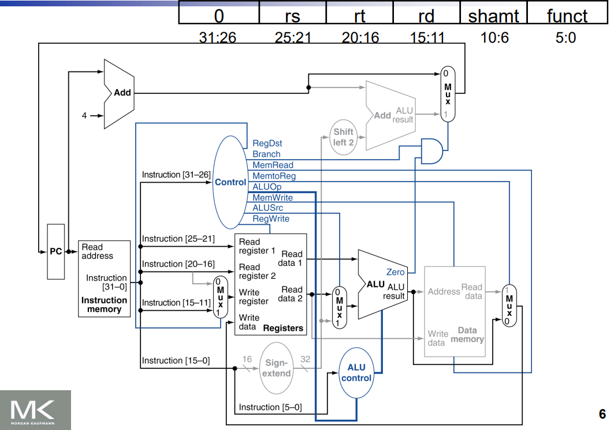
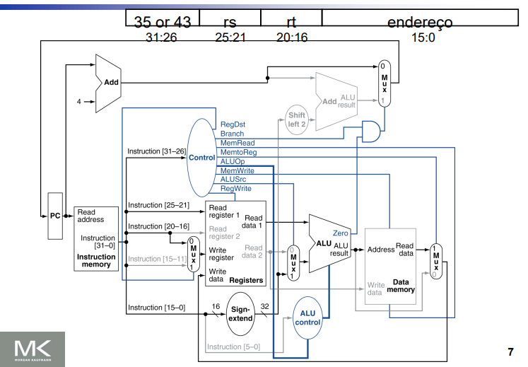
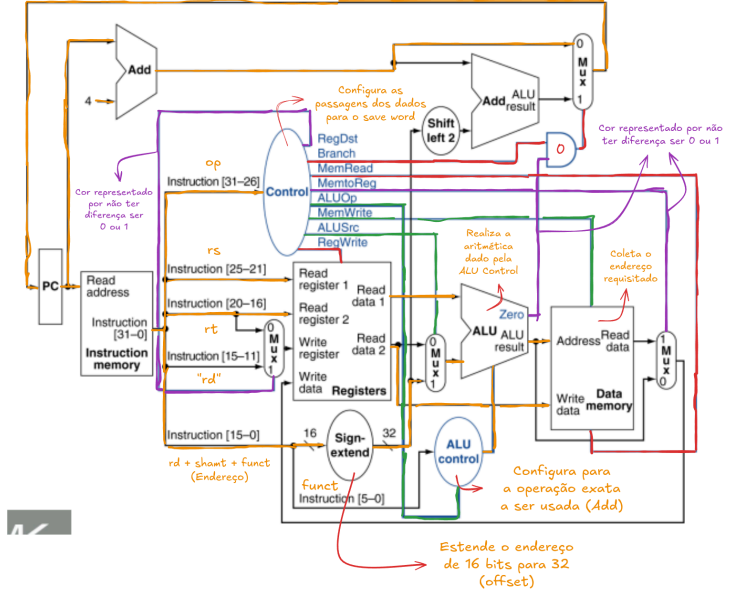
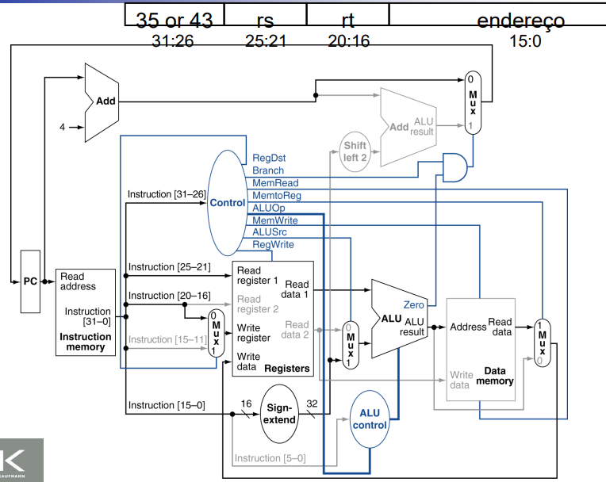
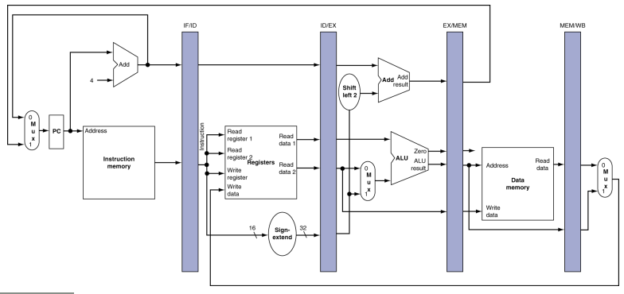
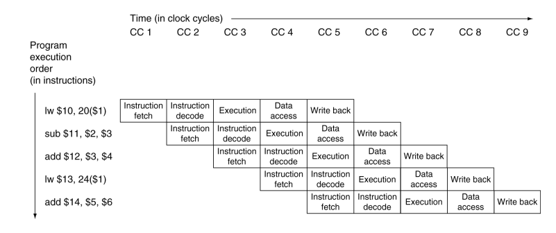

Arquitetura de um processador MIPS
1. Funcionamento Geral
Componentes
- RAM: contém blocos de instruções dos programas executados e seus endereços.
- CPU: lê e executa instruções sequencialmente.
- PC (Program Counter): registrador que aponta para o endereço da próxima instrução. No MIPS, ele é sempre incrementado em 4 bytes, pois cada instrução ocupa 4 bytes.
- Sistema Operacional (SO): gerencia múltiplos programas em execução realizando troca de contexto, salvando o estado de um programa e restaurando o de outro.
Fluxo de execução
- O código fonte é compilado e convertido em linguagem de máquina.
- O SO carrega essas instruções na memória RAM.
- O PC aponta para a primeira instrução.
- A CPU busca a instrução da RAM e a coloca no IR (Instruction Register).
- A instrução é decodificada e executada.
- O PC é atualizado até o fim do programa.
Ciclo de Busca (Fetch)
- O PC contém o endereço da próxima instrução.
- Esse endereço é usado para buscar a instrução na Memória de Instruções.
- O endereço é incrementado em 4 (instrução seguinte).
- A instrução é carregada no IR (Instruction Register).
2. Caminho de uma instrução Tipo-R
Formato R-type
opcode | rs | rt | rd | shamt | funct
add $rd, $rs, $rt
- Opcode (6 bits): identifica o tipo de operação (para R-type geralmente é 0).
- rs (5 bits): registrador fonte 1.
- rt (5 bits): registrador fonte 2.
- rd (5 bits): registrador destino.
- shamt (5 bits): valor de deslocamento (usado em shifts).
- funct (6 bits): especifica a operação exata (ex:
add=100000).
Ciclo de Execução

- Fetch: PC busca a instrução.
- Decode: separa opcode, registradores e funct. Registradores
rsertsão lidos,rdé reservado. Opcode e funct vão para a Unidade de Controle. - Execute: a ULA realiza a operação (ex: soma, subtração).
- Write Back: resultado escrito em
rd.
3. Caminho de uma instrução Load/Store
Formato Tipo-I
opcode | rs | rt | offset
lw rt, offset(rs)
sw rt, offset(rs)
- Opcode (6 bits): identifica operação (load/store).
- rs (5 bits): registrador base (endereço de memória).
- rt (5 bits): registrador destino (lw) ou origem (sw).
- Offset (16 bits): deslocamento aplicado ao registrador base.
Ciclo de Execução – lw

- Fetch: busca da instrução.
- Decode: separa opcode, registradores e offset (sign-extended para 32 bits).
- Execute: ULA soma
rs + offset→ endereço efetivo. - Memory Access: lê valor da memória.
- Write Back: escreve no registrador
rt.
Ciclo de Execução – sw

- Fetch: busca da instrução.
- Decode: separa opcode, registradores e offset.
- Execute: ULA soma
rs + offset→ endereço efetivo. - Memory Access: escreve o valor de
rtno endereço. - Write: nenhuma escrita em registradores ocorre.
4. Caminho de uma instrução de Desvio Condicional
Formato Tipo-I
opcode | rs | rt | offset
beq rs, rt, offset
- Opcode (6 bits): identifica o desvio.
- rs, rt (5 bits): registradores comparados.
- Offset (16 bits): deslocamento do endereço de destino.
Ciclo de Execução

- Fetch: busca da instrução.
- Decode: lê registradores
rsert, offset é sign-extended e deslocado 2 bits à esquerda. - Execute: ULA compara
rsert. Se iguais, ativa sinal de branch. - Decision: se branch é tomado, o PC recebe o endereço de destino (
PC + 4 + offset). Se não, continua sequencialmente.
5. Sinais de Controle
| Sinal | Tipo-R | Lw | Sw | Beq |
|---|---|---|---|---|
| RegDst | 1 | 0 | X | X |
| Branch | 0 | 0 | 0 | 1 |
| MemRead | 0 | 1 | 0 | 0 |
| MemWrite | 0 | 0 | 1 | 0 |
| MemtoReg | 0 | 1 | X | X |
| ALUOp | depende | dep | dep | dep |
| ALUSrc | 0 | 1 | 1 | 0 |
| RegWrite | 1 | 1 | 0 | 0 |
6. Pipeline
Técnica que permite processar múltiplas instruções simultaneamente.
Divide a execução em 5 estágios principais:
- IF (Instruction Fetch): busca instrução.
- ID (Instruction Decode): decodifica instrução e lê registradores.
- EX (Execute): executa operação/endereçamento.
- MEM (Memory Access): acessa memória de dados.
- WB (Write Back): escreve resultado nos registradores.


7. Hazard
Problemas que ocorrem no pipeline:
- Hazard Estrutural: conflito de hardware (ex: memória única sendo usada por
lwesw). -
Hazard de Dados: instrução depende do resultado de outra ainda não concluída.
-
Exemplo:
add $s0, $t0, $t1seguido desub $t2, $s0, $t3. - Hazard de Controle: ocorre em desvios (
beq,j). O processador não sabe qual instrução buscar até que a comparação termine.
8. Hierarquia de Memória
Níveis
- Registradores: mais rápidos, menor capacidade.
- Cache: próxima ao processador, reduz tempo de acesso.
- Memória RAM: volátil, armazena programas em execução.
- Armazenamento Secundário: discos/SSD, persistente e mais lento.
- Memória Virtual (Swap): parte do disco usada como RAM estendida.
Princípio da Localidade
- Temporal: se um dado foi acessado, provavelmente será usado novamente em breve.
- Espacial: se um dado foi acessado, endereços próximos também serão usados.
Cache
- Dados organizados em blocos (linha x coluna).
-
Fórmulas:
-
i = (K/M) % n j = K % MK = M * i + j-
Onde:
K: endereço do bloco na memória principal.M: tamanho do conjunto.n: número total de linhas da cache.